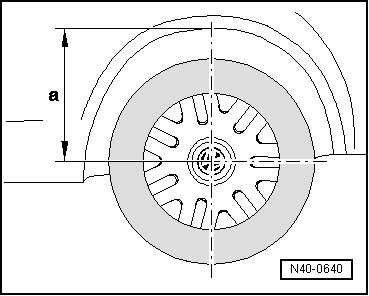

Standing Height, Measuring
Standing Height, Measuring
The standing height - a - is measured vertically from fender or lower edge of side panel to center of wheel.

Specified values can be found in vehicle diagnosis, testing and information system (VAS 5051).